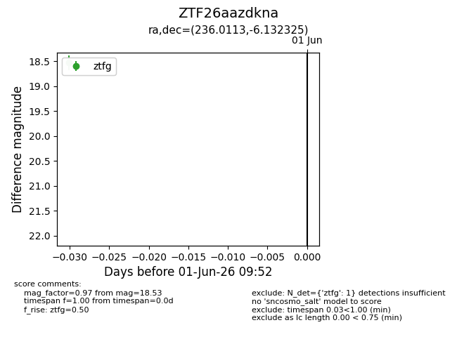
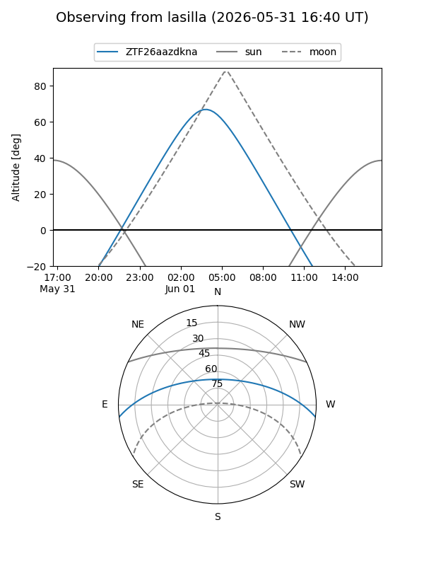
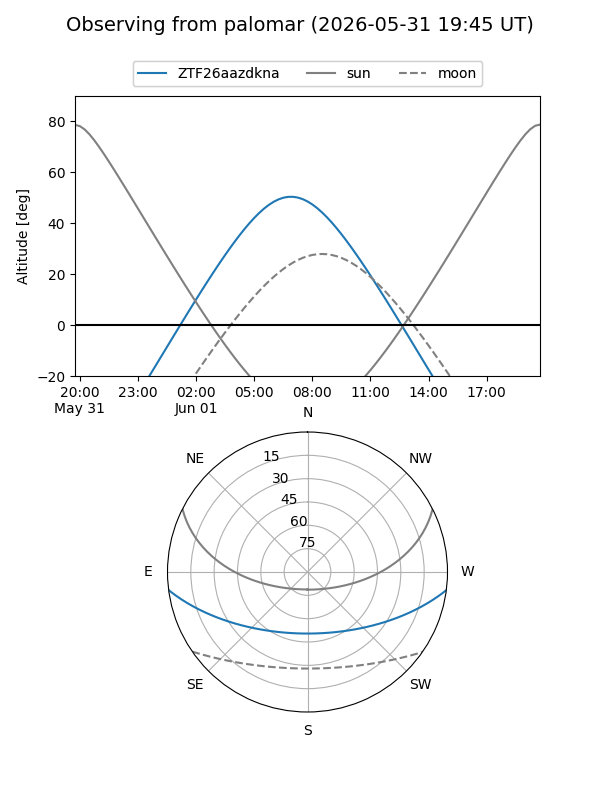

ZTF26aazdkna
Target ZTF26aazdkna at 2026-06-01 09:53
Aliases and brokers:
lsst-FINK: link
lsst-Lasair: link
lsst-ALeRCE: link
ztf-FINK: link
ztf-Lasair: link
ztf-ALeRCE: link
alt names
ZTF26aazdkna (ztf,fink_ztf)
Coordinates:
equatorial (ra, dec) = 236.0113,-6.13232
equatorial (HMS+DMS) = 15:44:02.72,-06:07:56.37
galactic (l, b) = (0.8771,+36.64528)
Flags:
Photometry:
last ztfg=18.53
1 ztfg detections
Lightcurve

Visibility


Additional plots